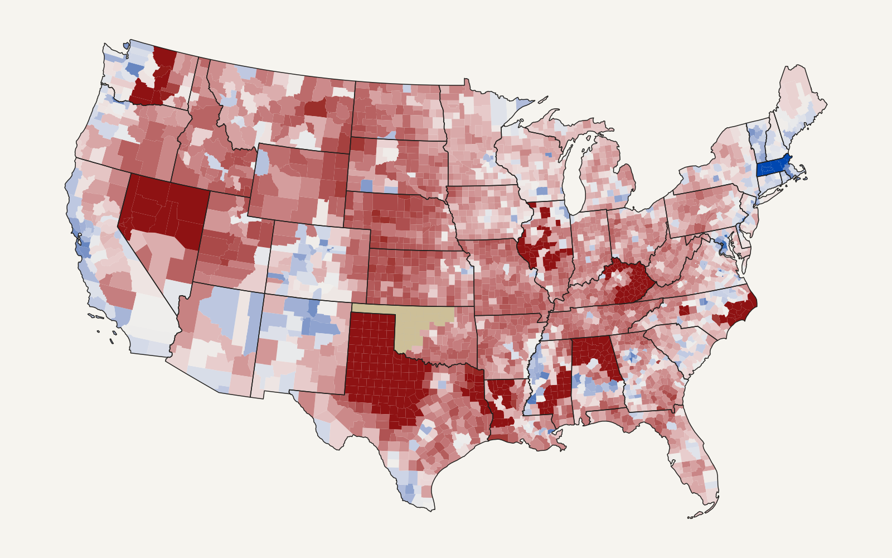

Open dataset · v1.0.0 · CC BY 4.0
County-level U.S. election results: House, Senate and President, 1990–2024
Free, documented county-level election data for the United States: every regular U.S. House general election by county since 1990, plus Senate and presidential results. Each row gives the candidate, party and votes in one county, and says where the numbers came from.

At a glance
- County-level House results back to 1990. Open datasets usually start in 2016 (MEDSL) or cover only some states and years (OpenElections). The earlier years here come from official state reports, canvasses and blue books, many transcribed from scans or microfiche.
- Candidate-level, not just shares. Names, party labels (including fusion lines such as Working Families), a DEM / REP / OTHER party group, and votes.
- Split counties handled. A county divided between congressional districts has one row per district, and the summary file adds them up to one row per county.
- Every number traceable. Each row names its source.
SOURCES.csvdescribes each of the 1,523 sources: publisher, document, where to find it, how it was transcribed, and its terms of use. - Errors found and fixed in the open. 135 entries in
data_corrections_log.csvrecord source errors (doubled counts, missing counties, wrong party labels) and how each was handled. Checked against FEC and state certified totals. - Gaps listed, not hidden. 41 state-years are not fully covered. Most are House seats won unopposed and never printed on the ballot, or Senate years with only a special election. Each one is listed with its reason.
Download
Files are attached to the GitHub Release and archived on Zenodo. Column definitions are in DATA_DICTIONARY.md.
| File | Contents | Size |
|---|---|---|
| us_county_results_long.csv .parquet |
One row per year × office × county × district × candidate × party line: candidate, party, party group, votes, source, quality flag | 46 MB 3 MB |
| us_county_results_summary.csv | One row per year × office × county: Democratic, Republican, other and total votes; two-party and total shares | 12 MB |
| us_county_results_gaps.csv | Every state-year-office not fully covered, with the reason | 5 KB |
| us_county_results_no_ballot.csv | House seats whose unopposed winner was not on the ballot (FL, LA, OK) or not tabulated (AR), by county | 133 KB |
| SOURCES.csv | Every source: publisher, document, locator, transcription method, license terms | 1.7 MB |
| data_corrections_log.csv | Every error found in the sources and how it was handled | 109 KB |
Quick start
Read FIPS codes and districts as text so leading zeros survive.
# R
library(readr)
url <- "https://github.com/pmheideman/us-county-election-results/releases/download/v1.0.0/us_county_results_summary.csv"
cty <- read_csv(url, col_types = cols(.default = col_character()))
house_2024 <- subset(cty, office == "house" & year == "2024")# Python
import pandas as pd
url = "https://github.com/pmheideman/us-county-election-results/releases/download/v1.0.0/us_county_results_long.parquet"
long = pd.read_parquet(url) # year and votes are integers; FIPS codes are strings
senate = long.query("office == 'senate' and year >= 2016")Coverage
| Office | Years | County-years | Candidate detail |
|---|---|---|---|
| U.S. House | 1990–2024 | 54,939 | Every candidate, per district |
| President | 1992–2024 | 27,969 | Every candidate from 2000; the two major-party nominees before that |
| U.S. Senate | 1990–2024 | 37,283 | Every candidate from 2016; the two major-party nominees before that |
48 contiguous states; Alaska, Hawaii and DC are not included. Regular general elections only (Louisiana and Texas runoffs are included where they decided the seat); special elections are excluded. Counties use 5-digit FIPS codes.
Frequently asked questions
Where can I download county-level U.S. House election results?
Here. This dataset has county-level results for every regular U.S. House general election from 1990 to 2024 in the 48 contiguous states, with candidate names, parties and votes. It's free under CC BY 4.0. Use the download links above or the Zenodo record.
How are counties split between congressional districts handled?
The long file has one row per county, district and candidate, so a county split between three districts appears
three times, once per district. The summary file adds these up to one row per county and year, with the number of
districts in n_districts.
How is this different from MEDSL, OpenElections or Dave Leip's Atlas?
MEDSL's county presidential file starts in 2000, and its House and Senate precinct files start in 2016. OpenElections is volunteer-built, so coverage varies by state and year. Leip's Atlas sells its data. This dataset starts from those open sources and fills the rest from official state reports and canvasses to reach back to 1990. Errors found along the way are corrected and logged, and every row says which source it came from.
Can I get vote shares instead of raw votes?
Yes. us_county_results_summary.csv has Democratic, Republican, other and total votes, the Democratic
two-party share (D ÷ (D + R)) and the Republican share of all votes, for every county, office and year.
Why are some counties blank for the House?
Mostly because the seat was won unopposed. Florida, Louisiana and Oklahoma leave unopposed candidates off the ballot,
and Arkansas doesn't count their votes, so no county returns exist. These are listed in
us_county_results_no_ballot.csv. Six state-years have no county-level source found yet; they're listed in
us_county_results_gaps.csv.
Is the data free to use, including commercially?
Yes. The compiled data is licensed CC BY 4.0: use it for
anything, with credit. Vote counts are public records, but a few state websites publish results under their own terms.
The license columns of SOURCES.csv list them.
How accurate is it?
State totals are checked against the FEC's certified results and the states' own canvasses. For President (2000–2024), 648 of 658
state-level nominee totals match the certified figures within 0.5%. House and Senate results (2004–2022) are compared
with the FEC district by district and state by state. Known remaining problems are
listed in the corrections log and flagged row by row in quality_flag.
Cite
Heideman, Paul (2026). U.S. county-level election results: President, U.S. House and U.S. Senate, 1990–2024 (v1.0.0) [Data set]. Zenodo. https://doi.org/10.5281/zenodo.22976553
Please also cite the upstream sources you rely on (listed in SOURCES.csv). The code that builds the
dataset is on GitHub under the MIT license. Design and
data decisions are documented in DECISIONS.md,
and changes between releases in the changelog.